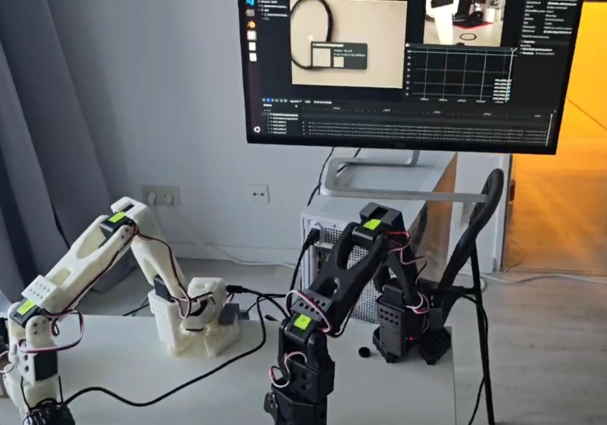

Method at a glance
- Observe and instructCombine camera images, a language instruction, and robot state.
- Generate an action chunkUse the pretrained vision-language backbone and flow-matching action expert.
- Deploy and evaluateConnect predictions to hardware, collect demonstrations, and assess behavior in real scenes.
Schematic summary of the project workflow.
From a general policy to a working robot
This project focuses on the practical steps between a pretrained robot foundation model and a physical experiment: configuring observations, collecting demonstrations, interfacing model actions with the robot, and evaluating the resulting behavior. The deployment work spans LeRobot SO-101 and Franka platforms.
A July 2025 seminar presentation by Guangyuan Wang and Haoliang Huang documents the initial SO-101 reproduction and demonstration-collection setup. The project builds on π₀ rather than proposing a replacement for its original model architecture.
Model architecture
π₀ is a vision-language-action model. It takes visual observations, language, and robot state as conditioning information and predicts a sequence of continuous actions. Its pretrained vision-language backbone provides visual and semantic representations; an action expert specializes that information for control.
The architecture presented in the seminar combines SigLIP visual encoding, a Gemma language backbone, and a separate action expert. Continuous action generation uses conditional flow matching: start from a noisy action sequence, estimate a denoising direction conditioned on the observation, and iteratively obtain an executable action chunk. This links multimodal understanding to smooth, high-frequency action generation.
Data and adaptation
The project uses custom real-world robot demonstrations for task-specific adaptation and evaluation. The July 2025 presentation documents SO-101 data collection with a leader/follower setup: the operator demonstrates a motion while the system records observations and corresponding robot actions.
The seminar also examines the original model’s multi-robot pretraining mixture, including Open X-Embodiment, Bridge, and DROID. That pretrained model provides the starting point for local deployment and task-specific demonstration collection.
Evaluation questions
The practical questions concern behavior beyond a nominal demonstration: recovery after disturbances, sensitivity to tabletop position, ambiguous instructions, and the effects of an open-loop action horizon. The seminar proposes shorter action chunks and more varied demonstrations as possible directions for improving robustness.
The project’s practical contribution is model integration, demonstration collection, and real-world experimental design. The seminar identifies shorter action chunks and more varied demonstrations as directions for studying recovery and spatial generalization.
Project visuals



Related resources
- π₀: A Vision-Language-Action Flow Model for General Robot ControlOriginal model paper
- OpenPIBaseline implementation
- LeRobotRobot-learning tooling
Based on the team's July 2025 π₀ seminar presentation and the subsequent deployment experience recorded in the CV. Baseline-model capabilities are distinguished from project-specific experiments.